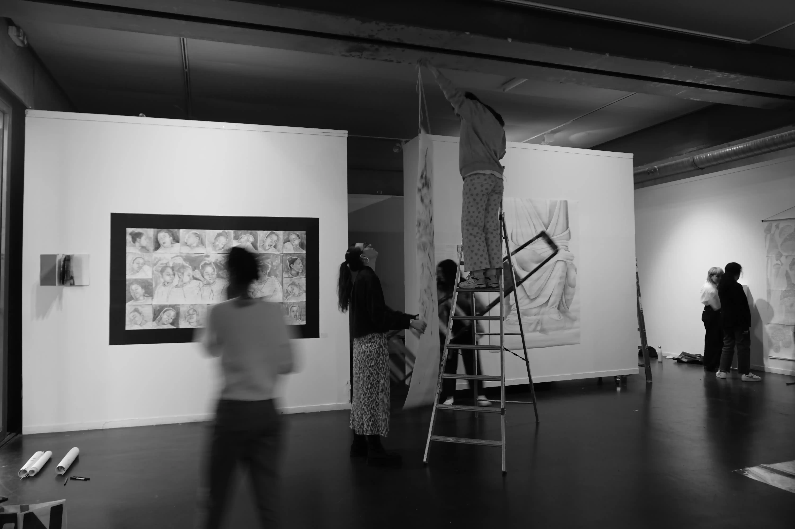
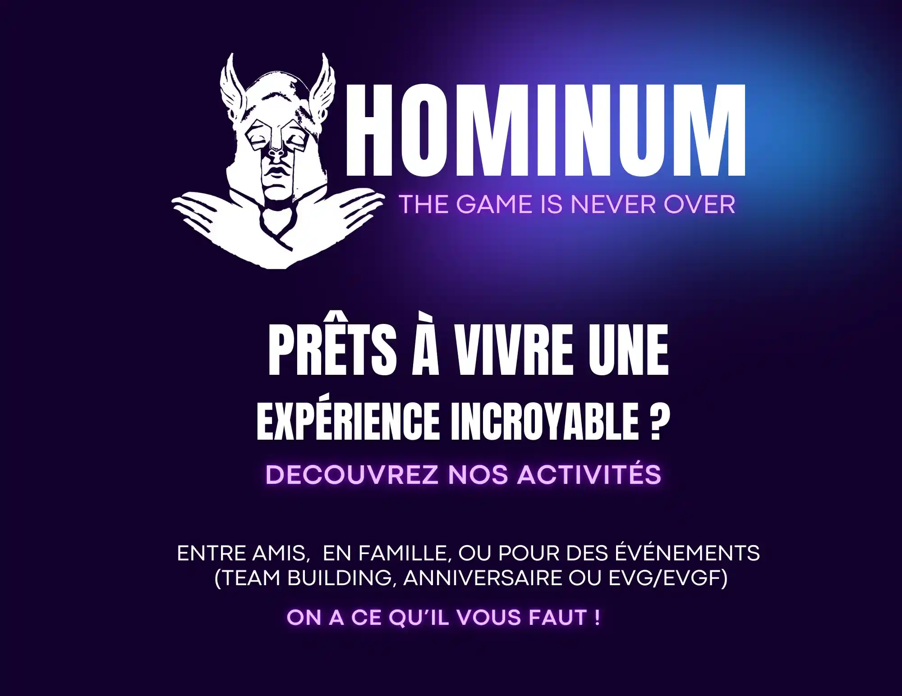
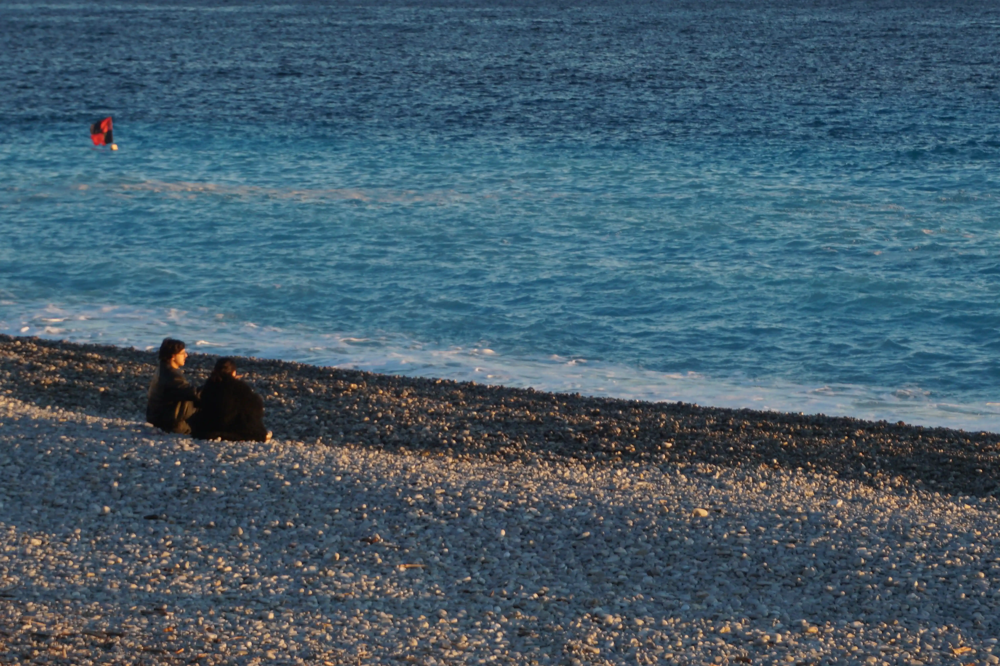

Inès Abram - étudiante
Enfance de Inès Abram
Inès Abram est née à Paris, en 2002.
Formations
Après une réorientation, elle rejoint la licence Information et communication, au sein du parcours Organisation et stratégie numérique.
Expériences Professionnelles
Elle effectue actuellement un stage en communication et événementiel au sein de l'entreprise Hominum Games.
Projets Futurs
Elle aimerait rejoindre un Master en Alternance.